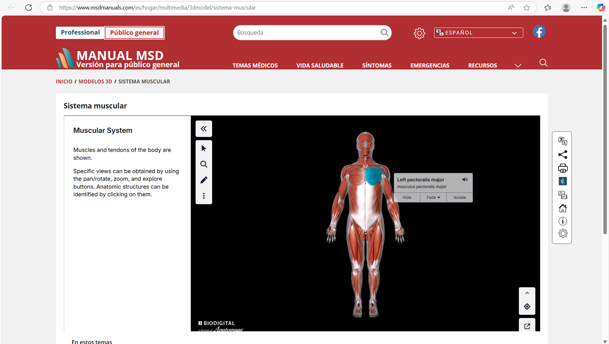
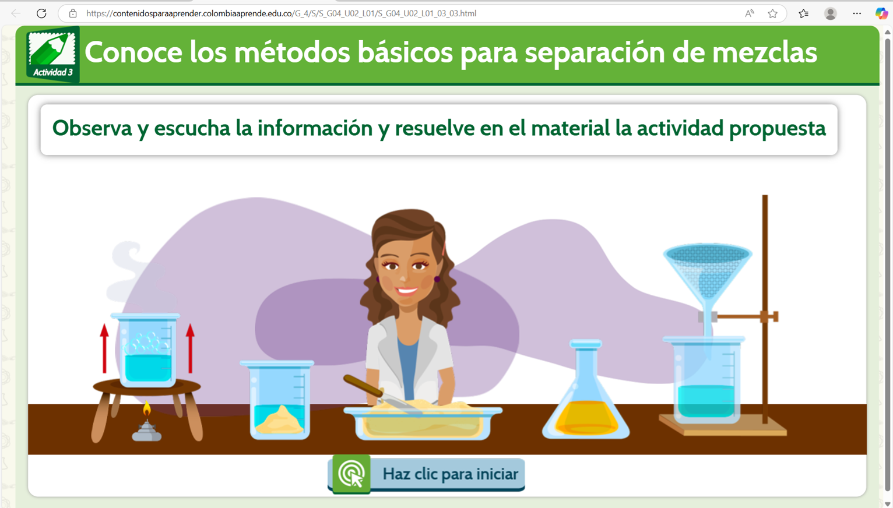

Entregable 1. Sitio Web Modelos de Evaluacion de Recursos Educativos Digitales.
Ing A. Manuel Eduardo Suarez Blanco
Modulo: Evaluacion de Recursos Educativos Digitales Docente: Mario Dejer
Especialización en Aplicación de TIC para la Enseñanza Universidad de Santander
Modelos de Evaluacion y RED
Modelos de Evaluacion de Calidad de Recursos educativos digitales.
1
⭐⭐⭐⭐⭐
LORI Learning Object Review Instrument Descripcion: Desarrollado en 2002 por docentes investigadores de la Universidad Simon Fraser.
Es un modelo de participacion que evalua recursos educativos digitales.
Permite dar una opinion segun el recurso, por medio de una escala de 5 estrellas de valoracion.
Tiene una escala de concordancia con los items evaluados para medir la calidad del RED. Criterios de valuacion:
Calidad de los contenidos
Adecuacion de los objetivos de aprendeizaje
Retroalimentacion
Adaptabilidad de contenidos
Motivacion
Presentacion y diseño
Usabilidad
Reuso
Cumplimiento de estandares
Escala de Valoracion:
Se evalua por medio de 5 Estrellas. ⭐⭐⭐⭐⭐
Con una escala: Muy Bueno90 puntos⭐⭐⭐⭐⭐Bueno80-89 puntos⭐⭐⭐⭐ Aceptable60-79 puntos⭐⭐⭐ Pobre40-59 puntos⭐⭐ N/A⭐ Metodología: Esta basado en la cuantificacion por medio de uan escala de 1-5 por medio de unos puntos que determinan la calidad de los items evaluados Instrumentos de Evaluacion:
Calidad de los Contenidos * Adecuacion de los Objetivos de Aprendizaje * Feedback * Motivacion * Calificacion Escala Likert 1 Muy deficiente 5 Excelenete
2
Reeves
Descripcion Segun Reeves (2001), "los ambientes virtuales de aprendizaje generan un potencial en la calidad academica evaluada de forma presencial y a distancia, las alternaticas para mejorar la evaluacion de un ambiente virtual tiene como objetivo el nivel de alienacion de la educacion.
Criterios de Evaluacion
Relevancia:Evalua el contenido del RED con las experecnias formativas del conocimiento y de la subjetividad del estudiante basado en su conocimientos
Autencidad:Evalua la calidad y realismo del entorno.
Participacion activa:Evalua la participacion e interaccion del aprendizaje del estudiante con el RED
Reflexion:Evalua la capacidad de desarrollar un analisis cogitivo en el pensamiento del estudiante
Coherencia narrativa:Evalua la secuencia logica de los procesos estructurados del RED
Escala de Valoracion
1. Muy Bajo
2. Bajo
3. Moderado
4. Alto
5. Muy Alto
Metodologia Se evalua el RED por medio de variables cualitativas y cuantitativas con observacion dirrecta, encuestas, analisis de datos para obtener como resultado el analisis motivacional de emociones de los usurio que aplicaron el RED.
Instrumento de Evaluacion Se aplican encuestas estrcuturadas por medio de item que aborden los criterios de interaccion. la encuesta incluye preguntas especificas para evaluar las motivaciones emocionales del estudiante.
3
CODA Calidad de los Objetos de Aprendizaje
Descripcion Este modelo es una guia para evlualar la calidad y creacion de OA (Objetos de Aprendizaje), evalua 10 criterios o items en dos categorias una Pedagogica y la segunda Tecnologica.
Criterios de Evaluacion Los Items que evalua CodA son:
1. Criterios Pedagógicos
Objetivos y coherencia didáctica
Calidad de los contenidos
Capacidad de generar reflexion, analisis e innovacion
2. Criterios Tecnologicos
Formato y Diseño
Usabilidad
Accesibilidad
Reusabilidad
Escala de Valoracion 1-2 Bajo 3-4 Medio 5 Alto
Metodologia Dentro de los 10 Items que se evluan se tiene encuenta las tecnicas de evaluacion,, la revision documental, la observacion directa del uso del software, encuentas a usuarios sobre el uso, entre otros elementos que ayuda a evaluar de manera precisa.
Instrumento de Evaluacion El modelo COdA usa listas de verificacion de las variables cualitativas cuantitativas con el fin de tener formatos estructurados que faciliten la evaluacion de los recursos por medio de los Items.
4
Norma Une 71362
Descripcion Esta norma tiene como objetivo evaluar recursos digitales con el fin de verificar estandares pedagogicos y tecnologicos para el contexto educativo. La norma evalua la calidad y efectividad de los RED.
Criterios de Evaluacion Este modelo icluye criterios como:
Descripcion didactica
Calidad de los Contenidos
Capacidad para generar aprendizaje
Adaptabilidad
Interactividad
Motivacion
Formato y diseño
Portabilidad
Estabilidad técnica
Navegacion
Operabilidad
Accesibilidad
Escala de Valoracion Este modlo evalua al docente y al estudiante de forma que los perfisles de los docentes funcionan en el uso y creacion del RED y desde el perfil del estudiante se evalua la interactividad y uso del programa asi como la percepcio y operabilidad El perfil de docente evalua 15 items y el perfil del estudiante evalua 14 items con dos preguntas abiertas Los item tiene una valoracion y una puntuacion de 0 a 10 puntos, donde Cero 0 es el minimo valo y 10 es el maximo numero en la valoracion.
Metodologia Se hace un revision tecnica de los documentos pruebas tecnicas, encuestas de uso y percepcion, evaluacion y prueba de los Software, con el fin de analizar y determinar la informacion de uso, la norma UNE 71362, verifica la calidad de los recursos educativos para el beneficio de los usurios.
Instrumento de Evaluacion
Los instrumentos de evaluacion estan basados en lso requisitos y directrices evaluados por la Norma UNE 71362, por medio de la verificacion y obtencion de los datos, las matrices elaboradas evluan el funcionamiento y cumplimiento de los items.
5
Furps Funcionalidad, Usabilidad, Fiabilidad, Rendimiento y Soportabilidad
Descripcion Esta diseñado para evaluar y mejorar las caracteristicas que componen el rendimeneoto de un RED empresarial. Con el fi de analizar las posibles conplicaciones que pueda presentar, las fallas no son presentacion de un RED Empresarial.
Criterios de Evaluacion Evalua 5 caracteristicas: Funcionalidad F / Usabilidad U / Fiabilidad R / Rendimiento P / Soportabilidad S
Funcionalidad F:Gestion de dispositivos y recuros de acceso y seguridad de usurios.
Usabilidad U: Interfaz de gestion de recursos documentos y accesibilidad
Fiabilidad R: Posibles fallos que no afecten la interaccion y el rendimiento P, disponibilidad de recursos como internet.
Soportabilidad S: Compatibilidad entre los mantenimientos y actualizaciones del programa.
Escala de Valoracion Emplea la escala Likert de 1-5
1: Muy Insatisfecho
2: Insatisfecho
3: Neutral
4: Satisfactorio
5: Muy Satisfactorio
Metodologia
Recopilacion de Datos
Encuestas y Entrevistas
Analaisis de Registros
Pruebas de Estres
Revision de Documentacion
Instrumento de Evaluacion Por medio de cuestionarios de evaluan las caracteristicas de los RED Funcionalidad
¿La red permite una gestion adecuada de los dispositios conectados?
¿El sistema de gestion de ususrio es funcional y tiene seguridad?
¿La actualizacion del RED tiene un codigo robusto de seguridad?
Usabilidad
¿La interfaz de gestion de la red es intuitiva y facil de usar?
¿la interfaz es clara y completa para interactuar?
¿Los administradores acceden de forma adecuada y rapida?
Fiabilidad
¿La red tiene la capacidad para la interactiidad?
¿La red soporta fallos sin interumpir el uso?
¿El sistema detecta y notifica los fallos?
Rendimiento
¿La red cuenta con el ancho suficiente para soportar la aplicacion?
¿La latencia en la red en minima y aceptable para el uso?
¿La red notifica fallos de rendimiento?
Soportabilidad
¿La red es compatible cons otros sistemas, protocolos y estandares operativos?
¿Las actualizacions y soluciones se aplican rapidamente sin generar inconvenientes?
¿La red puede solucionar problemas o manteniiento de manera eficiente?
6
McCall
Descripcion Este Modelo Evalua la calidad de los productos generados por software, se centra en tres atributos de calidad: La Operabilidad, La Revisabilidad y la Transcionalidad
Criterios de Evaluacion
1. Operabilidad Product Operation
Coreccion:Precision del contenido para el aprendizaje
Eficiencia:Uso eficiiente de los recursoso del sistema
Integridad:Seguridad del software a accesos no autorizados
Usabilidad:Facilidad en la interaccio del uso del software
2. Revisabilidad Product Revision
Mantenibilidad:Codificacion del software entendible para mejorar o corregir errores
Felxibilidad:Capacidad del Software para operar en multiplataformas
Testabilidad:El software debe poder ser revisado para su evaluacion
3. Transicionalidad Product Transition
Portabilidad:Acceso del software para ser tranferido de un entorno a otro equipo
Interoperabilidad:El software puede interacturar con otros sistemas operativos
Escala de Valoracion
Metodologia
Seleccion del Software:Identificar la informacion del programa.
Definicion del Objetivo de EvaluacionEstblecer el alcance al cual se desea llegar
Aplicacion del Modelo de McCallEvaluar cada item de calidad del software por medio de la escala definida.
Recoleccion de Datos:Toma de datos e infromacion detallada de los items evaluados.
Analisis de Resultados:Analizar la informacion recolecta, interpretar las debilidades fortalezas encontradas.
Informe de Evaluacion:Elaborar el documento que informe la evaluacion realizada con sus conclusiones.
Instrumento de Evaluacion Los siguientes items se tienen encuenta para evaluar software educativo basados en la Operabilidad, Revisabilidad y Transcionalidad:
Operabilidad
¿El software cumple con las funciones especificas ?
¿El software usa los recursos del sistema de manera eficiente ?
¿El software tine seguridad contra accesos no autorizados?
¿El software es facil de usar por el usurio?
Revisabilidad
¿El software es facil de mantener y modificarr?
¿El software se adapta facil a los requerimientos de los sistemas?
¿El software es facil de probar y analizar para evaluar su calidad?
Transicionalidad
¿El software puede ser tranferido entre sistemas?
¿Los requerimientos del software son usados por el sistema?
¿El software interactua con otros sistemas?
Recurso 2 Seleccionado:
🧠 🧬 👨🏫 🧫
MSD manuals Merck & Co, Inc., Nombre RED
Ciencias NaturalesÁrea de conocimiento
Educacion básica: Grados 8° Nivel o grado de aplicación.
Merck & Co, Inc., es una empresa farmacéutica multinacional estadounidense con sede en Rahway, Nueva Jersey.Datos del autor
Este recurso integra tecnologias de la informacion y aprendizaje por medio de contenidos interactivos y dinamicos con un simulador interactivo del cuerpo humanos, en diferestes funciones y sistemas. Por medio de este simulador del cuerpo humano se complementan las clases de los diferentes sistemas, en este caso el sistema muscular, se puede seleciconar e intracturar con las diferentes partes del cuerpo, lo que es util para que el estudiante reconozca las estructuras del cuerpo.Descripción del RED.
* Diseñada para ser usadas en el aula y en casa.
* Incluye un simulador interactivo el cual es accesible por medio de conexion a internet.
Características del RED y posibilidades de uso.
Conexion a InternetLimitaciones del RED.
Verificación de estándares en el RED.

Captura de pantalla o imagen del RED
Ventajas
Enfoque Personalizado: Permite adaptar la evaluación a las necesidades individuales de cada estudiante, reconociendo sus diferentes estilos de aprendizaje y ritmos.
Fomento de la Autonomía: Al involucrar a los estudiantes en su propio proceso de evaluación, se promueve la autonomía y la responsabilidad en su aprendizaje.
Desarrollo de Habilidades Críticas: Este modelo ayuda a los estudiantes a desarrollar habilidades críticas y reflexivas, ya que deben analizar su propio desempeño y establecer metas de mejora.
Retroalimentación Constructiva: Facilita la entrega de retroalimentación continua y constructiva, lo que permite a los estudiantes comprender mejor sus logros y áreas de mejora.
Motivación Aumentada: Al hacer que los estudiantes participen activamente en su evaluación, se incrementa su motivación y compromiso con el aprendizaje.
Mejora del Clima Escolar: Fomenta un ambiente de confianza y colaboración entre docentes y estudiantes, lo que puede mejorar el clima escolar en general.
Facilitación del Aprendizaje Colaborativo: Promueve el trabajo en equipo y la colaboración entre estudiantes, lo que enriquece el proceso de aprendizaje.
Limitaciones
Escasa Interacción y Seguimiento Personalizado Limitación: Colombia Aprende no ofrece una herramienta robusta de seguimiento del progreso o interacción directa entre el estudiante y el profesor dentro de la plataforma. Impacto: Sin la capacidad de monitorear y ajustar el aprendizaje de los estudiantes, los docentes tienen menos herramientas para ver el avance de los estudiantes y para ajustar el apoyo en áreas específicas, lo que sería ideal para grupos con habilidades y conocimientos diversos.
VERIFICACIÓN DE ESTÁNDARES EN EL RED
Evaluación Continua y Retroalimentación Descripción: Los contenidos deben ser evaluados continuamente para adaptarse a los cambios en el currículo y responder a la retroalimentación de los docentes y estudiantes. Verificación: El Ministerio de Educación realiza evaluaciones periódicas y recoge opiniones de los usuarios para actualizar los contenidos, eliminando material desactualizado o poco efectivo.
Modelo LORI
Criterios de Evaluacion
Puntaje (1-5)
Calidad de los Contenidos
3
Adecuacion de los Objetivos de Aprendizaje
4
Feedback
4
Motivacion
4
Resultado
4
Modelo COdA
Criterios de Evaluacion
Puntaje (1-5)
Objetivos y coherenica didactica
5
Calidad de los contenidos
4
Interactividad y adaptabilidad
4
Motivacion
4
Resultado
4
Norma Une 71362
Criterios de Evaluacion
Puntaje (1-5)
Verificacion y obtencion de los datos
3
Matriz de Evaluacion de funcionamiento
4
Evaluacion de accesibilidad
4
Encuestas y retroalimentación de usuarios
4
Resultado
4
Recurso 1 Seleccionado:
🧪 ⚗️ 🦠 👨🔬
Simulador Laboratorio de mezclas quimicasNombre RED
Recurso conformado por un simulador del laboratorio de quimica basado en la separacion de mezclas, interactivo e intuitivo para el desarrollo de las clases.Descripción del RED.

Captura de pantalla o imagen del RED
Ventajas
Enfoque Personalizado: Permite adaptar la evaluación a las necesidades individuales de cada estudiante, reconociendo sus diferentes estilos de aprendizaje y ritmos.
Fomento de la Autonomía: Al involucrar a los estudiantes en su propio proceso de evaluación, se promueve la autonomía y la responsabilidad en su aprendizaje.
Desarrollo de Habilidades Críticas: Este modelo ayuda a los estudiantes a desarrollar habilidades críticas y reflexivas, ya que deben analizar su propio desempeño y establecer metas de mejora.
Retroalimentación Constructiva: Facilita la entrega de retroalimentación continua y constructiva, lo que permite a los estudiantes comprender mejor sus logros y áreas de mejora.
Evaluación Integral: Considera no solo el conocimiento académico, sino también aspectos emocionales y sociales, lo que contribuye a un desarrollo más completo del estudiante.
Motivación Aumentada: Al hacer que los estudiantes participen activamente en su evaluación, se incrementa su motivación y compromiso con el aprendizaje.
Mejora del Clima Escolar: Fomenta un ambiente de confianza y colaboración entre docentes y estudiantes, lo que puede mejorar el clima escolar en general.
Facilitación del Aprendizaje Colaborativo: Promueve el trabajo en equipo y la colaboración entre estudiantes, lo que enriquece el proceso de aprendizaje.
Adaptabilidad: Se puede aplicar en diferentes contextos educativos y niveles de enseñanza, lo que lo hace versátil y útil en diversas situaciones.
Limitaciones
Falta de personalización del contenido
Limitación: Aunque la plataforma abarca varios contenidos de quimica en solucion y sepracion de meszclas, los contenidos no se personalizan o adaptan para atender las necesidades específicas de cada grado o nivel de desarrollo cognitivo.
Impacto: Los estudiantes de otros grados avanzados pueden encontrar algunos contenidos demasiado basicos o, en algunos casos, poco atractivos en términos de diseño y metodología de enseñanza para su edad, lo cual puede dificultar la comprensión y el interés.
VERIFICACIÓN DE ESTÁNDARES EN EL RED
Adecuación Pedagógica y Metodológica Descripción: Los contenidos deben estar diseñados para ser comprensibles y atractivos para los estudiantes, empleando metodologías adecuadas para cada nivel y área.
Verificación: A través de pruebas interactivas de test con docentes y estudiantes, se evalúa si los contenidos son accesibles, motivadores y si fomentan el aprendizaje activo y significativo, especialmente en grados de octavo donde los estudiantes aprenden mejor a través de juegos interactivos y actividades dinamicas.
Cumplimiento de Estándares de Accesibilidad Descripción: Para asegurar que los contenidos sean inclusivos, deben cumplir con los estándares de accesibilidad digital, permitiendo el uso por estudiantes con discapacidades.
Verificación: Esto implica adaptar materiales para personas con discapacidades visuales, auditivas o motoras y verificar que las herramientas funcionan en dispositivos de bajo costo y con conexiones a internet.